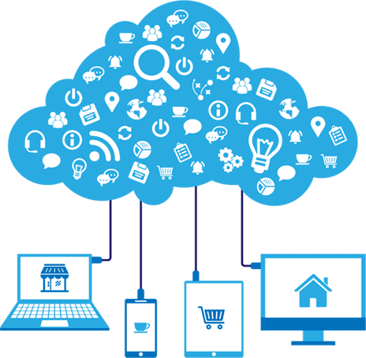
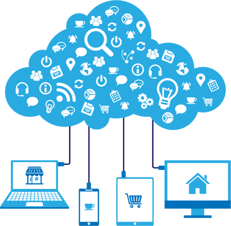

Trabalho 03 - Davi da Silva Martins

 

Computação em nuvem
Computação em nuvem (cloud computing) é uma tecnologia que permite acesso remoto a programas (softwares), arquivos (documentos, músicas, jogos, fotos, vídeos) e serviços por meio da internet.
Digamos que você tenha que entregar um trabalho de escola e você esqueceu-se de imprimi-lo. Como resolver uma situação como esta? Simples, através do computador da escola com acesso a internet, você pode acessar seus arquivos pessoais e imprimir o trabalho. Isto porque com a computação em nuvem os seus dados não estão confinados em um disco rígido de seu computador, eles estão disponíveis na web. Como por exemplo, o Google Docs, onde você pode criar documentos e armazená-los on-line.
O que muitas pessoas não sabem é que, esta tecnologia já vem sendo usada a um bom tempo. Usuários que possuem uma conta de e-mail como, por exemplo no Hotmail, podem acessar seus e-mails em qualquer lugar. Ou seja, não precisam do programa Outlook Express, para poder ler e-mails, simplesmente precisam se logar numa conta de e-mail pela web, em qualquer computador conectado a internet. Não existe um software do Hotmail instalado no computador, ele é acessado pela Web, ou seja, está na nuvem. Porque nuvem? A nuvem é um símbolo muitas vezes usado para representar a internet em diagramas e fluxogramas, portanto o termo foi utilizado para representar a internet.
Os principais fornecedores deste tipo de tecnologia são Microsoft, Salesforce, Skytap, HP, IBM, Amazon e Google. Os clientes da computação em nuvem para ter acesso a serviços completos precisam pagar pelos recursos que utilizam. Muitos acham esta tecnologia uma boa forma de economizar dinheiro com hardware, software e serviços, principalmente as empresas. Grandes organizações, ao utilizar a computação em nuvem, não precisam comprar, por exemplo, um conjunto de softwares ou licenças de software para cada funcionário. Em vez disso, contrataria um serviço de computação em nuvem e pagaria uma taxa.
As principais características da computação em nuvem são a agilidade, escalabilidade, acesso em qualquer local e por diferentes aparelhos (telefones celulares, laptops e PDAs), permite o compartilhamento de recursos por um grande grupo de usuários, serviços fáceis de usar, não sendo necessária instalação. Porém, o quesito segurança preocupa um pouco. Assim como tem surgido tecnologias como esta para facilitar o acesso às informações, paralelamente pessoas especializadas em invadir computadores e programas, os "hackers" podem invadir nossos dados e roubá-los. No entanto, estas empresas fornecedoras da computação em nuvem investem muito em segurança, nos chamados “antivírus em nuvem”.
A tendência é que os computadores do futuro terão preços baixos, se comparados com os preços atuais, visto que serão produzidos de forma mais simplificada, já que boa parte de seus dados poderão ser armazenados fora do hardware. Com destaque para os mini laptops, pois podem ser facilmente carregados, possuem baixo consumo de energia e são bem mais baratos.
Modelos de Implementação
| Tipo de implantação | Descrição | Provável Risco |
| Nuvem Pública | Com a nuvem pública, os serviços são entregues aos cliente por meio de uma rede aberta para uso público | Dificuldade para avaliar, implementar e gerenciar os controles de acesso. |
| Nuvem Privada | A nuvem privada oferece mais segurança e controle porque os serviços são mantidos em uma rede privada protegida por firewall. | Os controles de acesso são mais fáceis de serem gerenciados e controlados |
| Nuvem Hibrida | Na nuvem híbrida temos uma composição dois modelos de nuvens públicas e privadas, oferecendo maior diversidade. | Os riscos relacionados a gestão do controle de acesso varia de acordo com o escopo de tecnogia aplicado. |